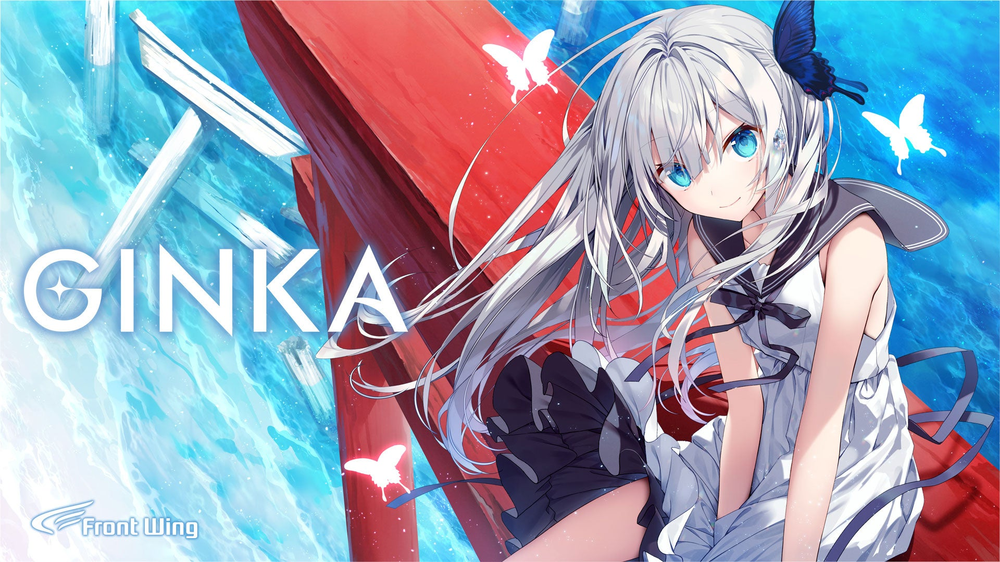
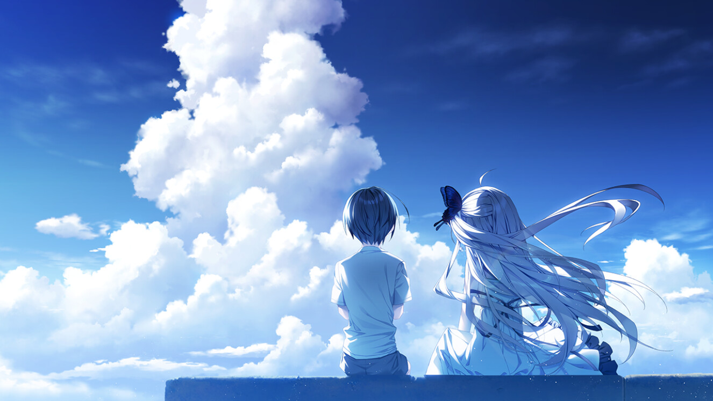
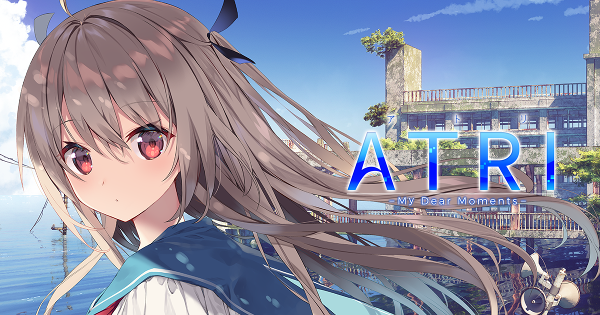
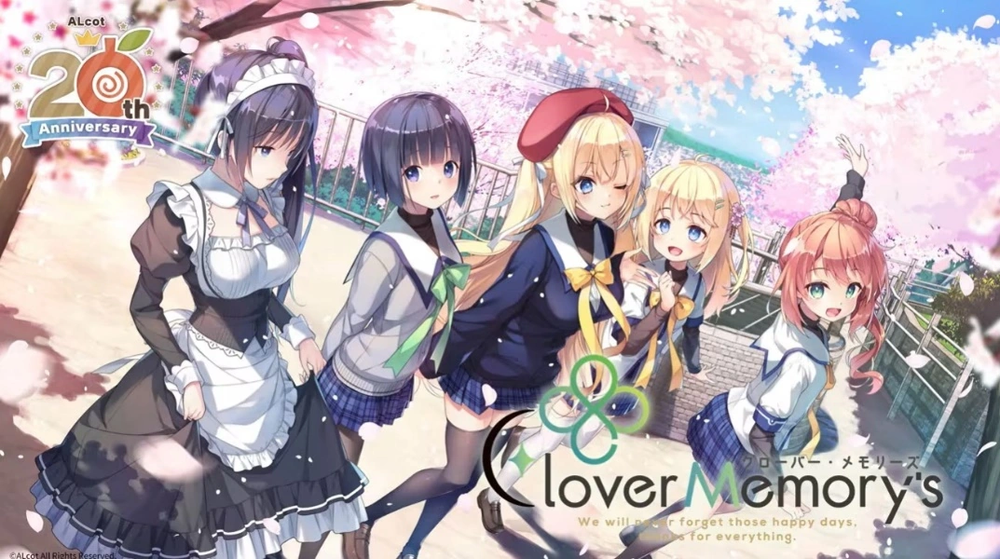
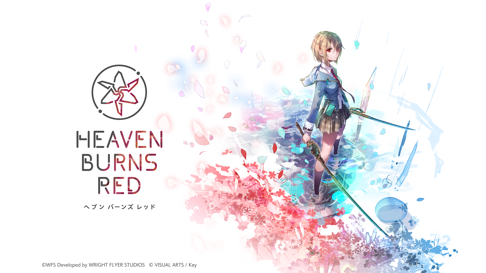
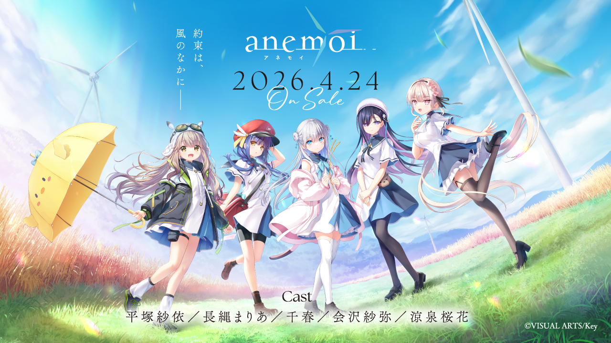

本文主要是一些闲笔。之前为了准备7月的N1考试，做了一段时间日文精听，材料无非是NHK和往年的JLPT真题。听多了新闻里那些郑重其事的表达，我突然想到，文字类冒险游戏不是现成的材料吗，有长难句，也有对应的字幕，用词还比新闻接地气，拿来练习顺便放松，似乎一举两得。结果翻了翻自己的推游记录，记忆里最近一部认真投入过的长篇，竟然还是22年发售的「ヘンタイプリズン」。
那阵子也断断续续推了些像「廃村少女」这样的作品，但总觉得和高中时不一样了。就连拔作，也已经很难让我提起当年的兴致。可以说，歳をとってもエロいことは考えるだろうが、何かに取り組む意欲そのものは、若い頃のテンションを保てない。欲望倒未必少了，只是为了满足欲望而折腾一番的意愿，实在不如从前。
高中读寄宿学校，每周回家，必关心的便是新游戏发售，Galgame周报几乎一期不落。那时也不见得每部都玩，可总觉得下个月还有值得等的东西。如今再说起新作，脑海里浮上来的却多半还是旧名字。22年在我的记忆里恰似一道鸿沟，后面的几年一下子模糊起来。当然，这只能说明我自己的关注少了，不能拿个人的游戏列表给整个行业开死亡证明。不过，自己热情退下去的时候，恰好也不断看到会社告别、老员工退休的消息，难免会把两件事联系起来。
“业界药丸”不知道从什么时候起，已经成了老生常谈。但感叹多了也容易偷懒：作品不合口味，药丸；新作延期，药丸；会社转做手游，还是药丸。最后什么现象都能解释，却什么也没解释清楚。我更想知道的，是那些熟悉的创作者渐渐年长以后，制作一部美少女游戏的过程，究竟有哪些东西也跟着停在了过去。
先说最容易感受到的一点。不知道各位现在挑游戏，会不会先看脚本家、原画和会社。我对声优倒没有那么执着，但看见熟悉的脚本家，总会多留意两眼。扶他自、漆原雪人，这些名字本身就带着某种保证，至少知道自己大概会得到什么。可一旦把“值得期待”完全等同于几个熟人的新作，久而久之，自己的视野也就剩下这么大了。
这并不等于新人已经不存在。更准确地说，是能被我们注意到、又愿意长期留在传统美少女游戏领域的新人，似乎没有想象中那么多。一个年轻人会写故事、会画美少女，他面前当然不只有给Galgame会社投稿这一条路。插画、漫画、轻小说，乃至手游的角色设计和剧情，都可能成为去处。单凭我认不出新作staff里的名字，就断言行业没有年轻人，显然也不公平。
画师尤其容易让人产生这种错觉。我们总习惯把出道时的印象固定下来，某位老师仿佛永远是“年轻画师”，某位老师又永远是那个画风很可爱的女孩子。可是作品里的角色每次登场仍然十七岁，画她的人却实实在在又过了十年。想想那些一直被叫作“小老师”的人也早已工作多年，倒不是三十岁就有什么问题，而是自己的时间感还停在她们刚被认识的时候。
说到这里，我觉得比“这位老师今年几岁”更值得追问的，是我们挂在嘴上的“某某老师的新作”，究竟是谁把它一笔一笔、一行一行做出来的。
拿「GINKA」来说，官方列出的原画与角色设计是ゆさの，渡边明夫负责副角色设计，ななかまい负责SD原画，企划和脚本则是紺野アスタ。这几个名字放在一起，并不能简单理解成几位画师各画几张图，最后拼起来交差。不同的人负责什么，最后又由谁把画面统一成一部作品的样子，关系到我们打开游戏时看到的每一张立绘和CG。


在开发者访谈里，导演かづや特别谈到，ゆさの同时具备原画和上色方面的能力，使「GINKA」的角色、背景用色呈现出与「灰色」系列不同的效果。这样看来，玩家觉得一部作品的画面清透、光线舒服，功劳便不能全算在最熟悉的那个名字头上。我们容易记住一眼认出的脸，却未必记得是谁让人物和背景站进了同一束光里。


不过，仅凭有人负责设计、有人负责上色，也不能断言前者是在给后者添麻烦。专业分工本来就可以让各自擅长的东西发挥出来。真正该问的是，设计是否适合这部作品，来回修改是否有明确的判断，以及最后交出来的画面是否协调。这些要落实到成品和制作资料上去看。只看staff表里谁的年纪大，便认定谁应该退场，我觉得还是跳得太快了。
我反而会担心另一种情况：某位老师的名字已经足以成为卖点，于是其他人都得围着他的习惯调整，连不适合当前作品的地方也只能设法迁就。如果年轻成员有自己的审美，却只能替前辈收尾，那所谓传承，最终学会的恐怕只有如何配合。前辈愿意听取意见，和新人敢不敢提出意见，都是制作能否继续往前走的问题。当然，不能只凭不喜欢一张脸，就认定某个团队一定发生过这些事。


画风也未必越新越好。老玩家喜欢熟悉的线条和上色，很正常；画师想调整画法，尝试新的光影，也很正常。看成品时，我更在意人物是否有表情，身体和衣服的关系是否说得通，光线是否真在为场景服务。高光多了不自动等于进步，保留旧画法也不自动等于落伍。要是讨论最后只剩下“老登画得就是不行”，那我们也就没比只认资历的人高明多少。
脚本方面也是一样。能写出一段好看的日常，不代表能把人物的选择一路推到结尾；有过一部名作，也不代表下一部的每个安排都经得住推敲。我们有时太愿意替喜欢的作者找补，前半段说这是熟悉的味道，结局不合适又说大概是会社的锅。若想让新人凭作品说话，也该让前辈的作品接受同样的检验。否则，名气越大越不必解释，新人倒从第一部起就得无所不能。
而长篇制作的消耗，又往往是在写不出、改不动的时候才显出来。剧本晚一点，配音、演出就得重新安排；已经做好的素材若要返工，也不是作者说声“这次想换个方向”便能凭空完成。玩家只看见发售日又往后挪了一次，制作的人却还得继续把手头的东西做完。我不想把年轻时能熬夜赶工，当作一个人应该永远维持的工作能力。若一套流程必须靠大家透支体力才能交付，等人上了年纪，问题自然更难遮过去。
ALcot的消息便让这些担忧变得很具体。2024年，会社为二十周年纪念作、也是最终作的「Clover Memory’s」发起众筹。宫藏在项目说明里谈到自己的年龄，不知道还能继续做多少年游戏，希望趁着仍有热情的时候，再做一部作品，和大家笑着告别。会社也宣布，将以这个项目为终点结束活动。从最初的「Clover Heart’s」到最后回归这一系谱的「Clover Memory’s」，连名字都透着一种把往事收拾好的感觉。


“年龄原因”四个字，读起来比单纯的经营不善还要无可奈何。卖得不好，总还可以想象下次换个题材、换种卖法；可人的体力和人生安排，没有办法靠再开一场宣传直播解决。创作者当然也有权说，已经做到这里了，接下来想过自己的生活。作为玩家会舍不得，但总不能因为自己还想看，就默认别人应该一直写到写不动为止。
而且这次众筹最后有2885人支持，筹得约1.15亿日元，远超3600万日元的目标。至少在这个项目里，“还有没有人愿意掏钱”和“原来的团队还能不能长期做下去”，并不是同一个问题。老玩家的支持可以促成一次体面的告别，却未必能让一家会社重新拥有未来十年的人员安排。把最后一作买下来，和让一份工作值得年轻人做十年，毕竟相差很远。
美少女游戏偏偏又很依赖个人。玩家喜欢的是某个脚本家的叙述习惯、某位原画的脸、某种只有这家会社才有的气氛，换人并不只是换个员工那么简单。对公司来说，最理想的当然是培养接班人；对玩家来说，新人一上来却难免要被拿去和前辈比较。连我们自己都会先问“还是不是那个味”，会社在决定把多少预算交给新人练手时，恐怕也很难毫无顾虑。
于是便有一种尴尬：熟悉的名字越能带来销量，项目越倾向于继续围着他们转；新人越缺少独立负责作品的机会，就越难证明自己也能带来销量。这不一定是谁故意排斥年轻人，有时仅仅是下一部游戏不能失败。资金宽裕的时候，试错还可以叫培养人才；已经在算下一笔回款的时候，试错就显得奢侈了。所谓后继无人，背后也许有不少这样的账。
何况做长篇的经验，也不是看过几部名作便能自动获得的。能写出一场漂亮的告白，和能把几条人物线、共同日常、伏笔回收都安置好，是两种不同的本事。原画之外，还有上色、背景、演出和程序，最后总得有人让这些东西真正合在一起。老员工退休时带走的，有时是这些很难单靠说明书传下来的经验。如果年轻人没有机会跟着做完一两部作品，等到前辈离开，再着急寻找能独当一面的人，恐怕已经晚了。
Visual Arts的情况则提供了另一种答案。2023年，马场隆博宣布向腾讯转让股份时，在官方博客里谈到自己已经63岁，以及公司未来如何承接的问题。他同时强调，当年的业绩很好。这和“会社做不下去，只能卖身”的说法并不一样；即使经营顺利，创办人的年龄也会让交班成为必须考虑的事情。
麻枝准则把自己的故事带到了手游里。「ヘブンバーンズレッド」由WFS与Key合作，他负责原案和主线剧本。这当然会让等待他再写一部长篇ADV的人感到失落，可若只用“润去做手游了”一笔带过，又很容易把创作者的尝试、公司的经营选择和股权变化混在一起。至于这种形式合不合自己的胃口，则完全是另一回事。喜欢他的故事，又不喜欢抽卡和养成，两种感受可以同时成立。


过去买一部作品，最踏实的地方，是知道故事总会走到结尾。我可以搁置，过几年再回来，存档还在那里。长线运营把剧情和活动、养成绑在一起，对只想读完故事的人来说，确实多了不少不想做的事。但一部长篇要先投入很久，开售后才能知道回收如何；持续运营则提供了另一种延续角色和安排制作的办法。老玩家可以不喜欢，会社也有理由尝试，总不能只靠一句“保持初心”，便替他们把往后的账都算好了。


但要说Key已经完全放弃传统作品，也不符合事实。「anemoi」在2026年4月24日发售，仍然是面向PC的买断恋爱冒险游戏。这至少说明，手游和独立完结的长篇，并非只能二选一。对我来说，比起要求会社从此不许碰手游，更实际的愿望是，希望做完一款受欢迎的运营游戏之后，他们仍然保有制作这类作品的意愿，也有条件把它做完。
说到这里，也该把视线从制作者身上挪开一点。老龄化这个词，很容易让人想到行业里都是中年人，可玩家又何尝没有自己的变化。以前推一部长篇，最紧缺的是能自由使用电脑的时间，所以每周回家反而很珍惜。后来能自己安排的时间似乎多了，真正愿意交给一部新作的心力却少了。空闲和精力不是一回事，这个道理大概只有开始频繁弃坑之后才会明白。
尤其是需要十几小时铺垫的作品。高中时，只要角色可爱，聊天、逛街、吃饭，怎样都能看下去；现在还没见到主线，便已经盘算后面要花多久。可Galgame的很多感情，恰好就长在那些看似没用的日常里。想在角色离开时感到难过，又嫌认识她的过程太慢，这多少也有点为难编剧。
再加上旧作留下来的，多半已经被时间筛过一遍，当年的平庸作品和没打完的路线，反而容易忘记。拿记忆里几部最好的作品去比较今天的发售表，自然怎么看都觉得不景气。我不否认行业有困难，只是不想把自己读得少了、耐心变差了，也全部算成新作的错。
新玩家也没有义务照着我们的路再走一遍。长篇共通线、安装补丁，都是需要适应的东西；他们尚未确定自己是否喜欢，就先要付出不少耐心。若来问个推荐，又先被一句“连这个都没玩过”堵回去，那大概更没留下来的必要。共同记忆本来可以让人亲近，却不该变成进圈子的门票。一个人只是想找部合胃口的游戏，总不能先要求他补完二十年的业界史。
当然，也不用因此把所有作品做短、把日常全删掉。有人喜欢几十小时的陪伴，有人想在周末读完一个故事，两者都该有作品可选。题材也可以多一点，工作后的相处、已经作出的选择，未必比校园恋爱无趣。无论写哪个年纪，要紧的还是把人物写成有自己心事的人，让人愿意读下去。把主角改成上班族，再添几句生活好累，并不会自动让故事成熟起来。
Steam之类的平台，可以先减少一些购买和安装的麻烦。「Clover Day’s Plus」便在2023年8月登上了Steam。但上架不自动等于有人读，译文、售价和传播仍要有人去做。海外玩家可以成为新受众，却不能被想象成一个只要打开就有钱流进来的口袋。
想来想去，我觉得自己在意的“高龄化”，更多还是一种接续不上的感觉。老作者做完这一部之后，谁来做下一部；老玩家不再每个月追新之后，还有谁愿意坐下来认真读。人逐渐年长本来很正常，如果有人加入，有人接手，退休也可以是件平常事。偏偏我们已经习惯某些名字一直在场，于是他们稍微停下来，整个圈子便像跟着安静了一截。
可惜这不是玩家在评论区喊几句支持新人，就能解决的问题。新人需要能做完的项目，也需要报酬；会社需要回款，也需要承担培养人的时间。对于我们这些只负责买和玩的人，能做的大概没那么宏大。遇到感兴趣的作品，条件允许就买下来，读完之后认真说说哪里喜欢、哪里不喜欢；介绍作品时，也给不熟悉这个圈子的人留一点听懂的余地。
写到最后，倒觉得最开始拿Galgame练听力的念头，多少有些为重新玩游戏找理由的意思。明明只是想放松，还得说服自己这也算学习。至于N1能不能受益，我不敢保证，毕竟考试里大概不会让人选择先去学生会室还是保健室。不过，若还能因为一个故事，暂时忘记去计算自己投入了多少小时，那至少说明当年的热情还没有完全耗尽。
会社会变，人会退休，读故事的我也不可能一直是高中时的自己。只是比起永远守着几个熟悉的名字，等他们再给我一部神作，我更希望有一天，自己会因为一个从没听说过的脚本家，重新开始留意下个月的发售表。到了那时，“业界药丸”大概还会有人说。但说完之后，手上总算还有新东西可玩。